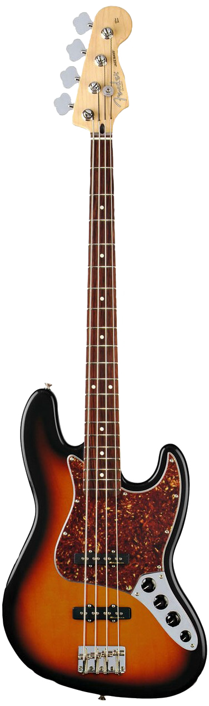
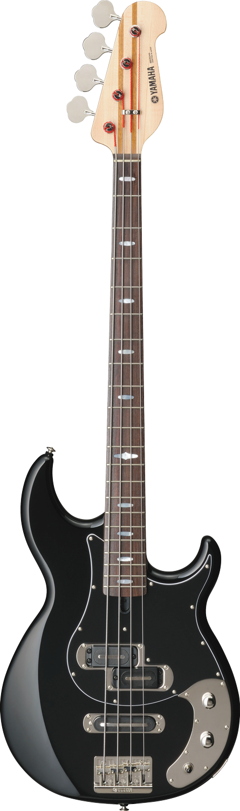

Fender Jazz Bass
이것은 펜더의 재즈 베이스이다. 프레시전이 클래식의 표본이라면 재즈는 모더니즘의 표본이다. 아마 필드에서 연주 중인 베이시스트 중 이 베이스를 써보지 않은, 혹은 써보고 싶다는 생각을 한 번도 안 해본 베이시스트는 없을 것이다. 두 개의 싱글 픽업은 우리가 바라는 그 '베이스'라는 악기의 올바른 소리를 들려준다.
Yamanaka Hana (Yamaha BB)
필자가 사용 중인 야마하의 BB 베이스이다. 클래식과 모던의 아름다운 조화를 이루는 이 베이스는 웅장한 바디에서 느껴지는 크고 우람한 울림과 살인적인 반짝임을 보여주는 레일 픽업이 특징이다. 필자는 감히 이 베이스의 소리와 외관에 첫눈에 반하고도 두 눈으로 반해벼렸다. Yamanaka Hana는 필자가 지어준 필자의 베이스 이름이다.